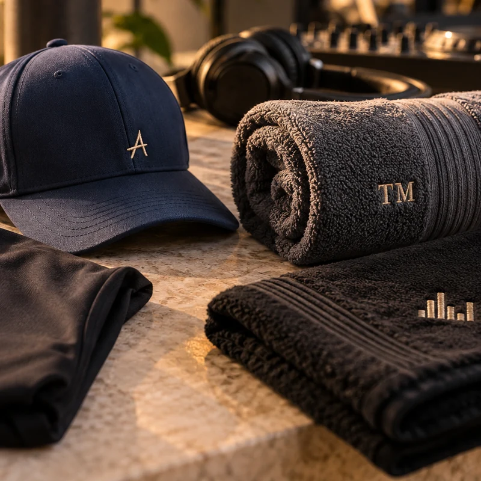

Sua marca acompanha cada conquista.
Peças práticas com um toque de identidade para quem vive em movimento.
- Toalhas com nome ou assinatura
- Bonés, camisetas e uniformes
- Bordados adequados ao tipo de tecido

Escolha cada detalhe.
Sem perder a essência.
Selecione tipo de peça, tamanho, quantidade, cor, posição do bordado e personalize com nome, iniciais, logotipo ou referência especial. Tudo é avaliado de acordo com a composição do tecido e a arte.
O que podemos personalizar
- Toalhas com nome ou assinatura
- Bonés, camisetas e uniformes
- Bordados adequados ao tipo de tecido
Possibilidades de tecidos
Estas são referências para orientar sua escolha; disponibilidade e compatibilidade dependem do modelo e do orçamento.
Pedido organizado
Combine diferentes peças e informe especificações separadas para cada uma. O resumo é encaminhado ao nosso atendimento digital.
Incluir no meu orçamento
O valor está
na atenção.
O bordado precisa conversar com a peça, respeitar sua textura e ficar legível na distância certa. É por isso que cada aplicação é analisada antes da produção.
Entenda como trabalhamos ↗Dúvidas sobre
personalização.
Posso fazer uma toalha com meu nome profissional?
Sim, nome ou logotipo poderão ser avaliados conforme tecido e posição.
Qual tecido é melhor para academia?
Depende de absorção, uso e personalização. Orientaremos as opções no orçamento.
Identidade para movimento, treino e bem-estar
Material e rotina
Toalhas de academia, acessórios e vestuário usados em atividades físicas exigem atenção à resistência e ao toque. O material deve ser adequado ao uso frequente.
Identidade aplicada
O nome do personal, monograma ou logotipo é dimensionado para a superfície, preservando conforto e leitura do desenho.
Posso bordar a toalha que já tenho?
Sim, após avaliação da trama felpuda, das dimensões e da posição pretendida.